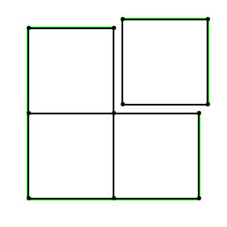
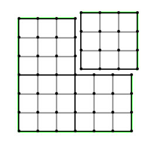
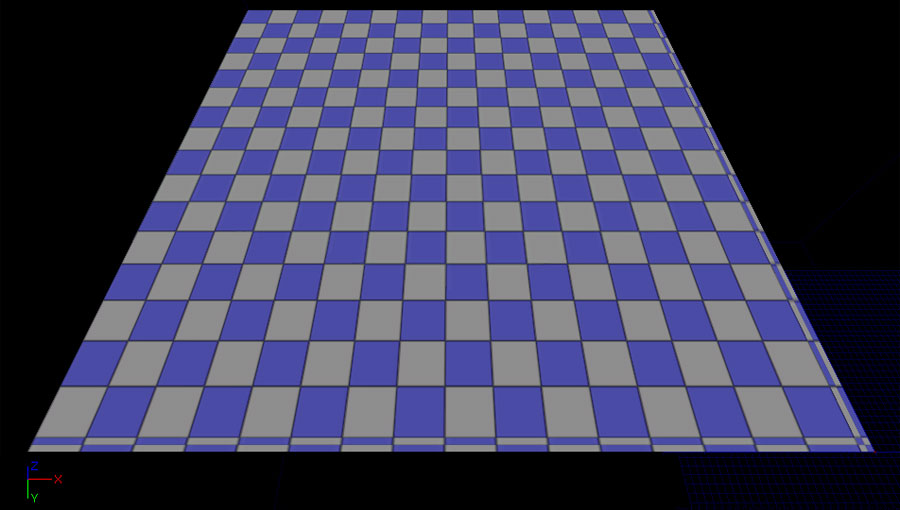
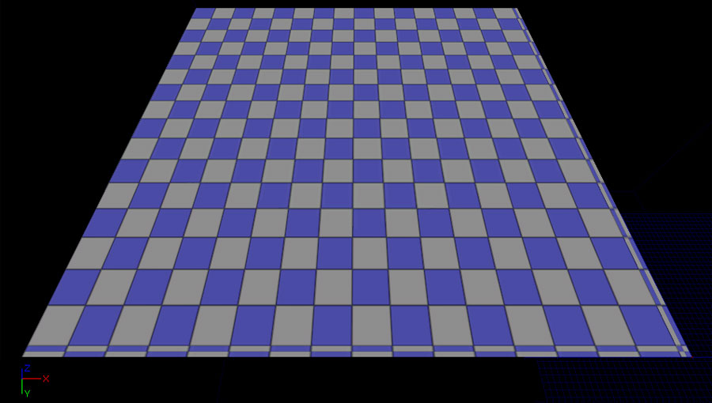
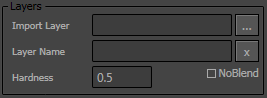
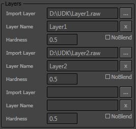
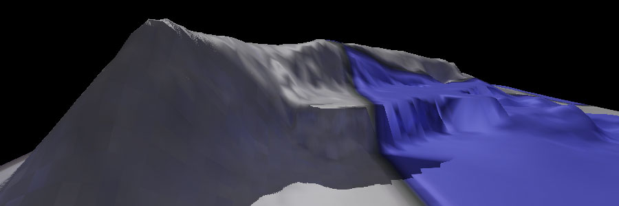
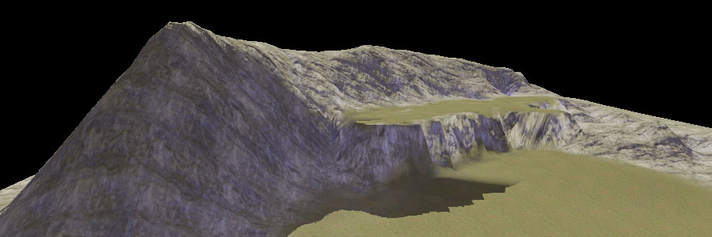

UDN
Search public documentation:
LandscapeCreating
日本語訳
中国翻译
한국어
Interested in the Unreal Engine?
Visit the Unreal Technology site.
Looking for jobs and company info?
Check out the Epic games site.
Questions about support via UDN?
Contact the UDN Staff
中国翻译
한국어
Interested in the Unreal Engine?
Visit the Unreal Technology site.
Looking for jobs and company info?
Check out the Epic games site.
Questions about support via UDN?
Contact the UDN Staff
Creating New Landscapes
Overview
Landscape Sizes
Landscape Components
Landscapes are divided into multiple Components, which are Unreal's base unit of rendering, visibility calculation and collision. Components in a Landscape are all the same size and are always square. The size of the Landscape component is decided at creation time and the choice depends on the size and detail of the landscape you wish to create. Each component's height data is stored in a single texture. Because of this, its size has to be a power-of-two number of vertices. The shared row of vertices along the edge of two neighboring components are duplicated and stored in each component. For this reason it makes sense to think about the number of quads in each component. A very simple Landscape is illustrated below (outlined in green) containing four components. Each component is made up of a single quad. One component has been separated to show how the vertices where the components meet are duplicated. Component Sections
Components can optionally be divided into either 1 or 4 (2x2) subsections. These sections are the base unit of Landscape LOD calculation. The size of each section in terms of vertices must also be a power of two (with a maximum of 256). This is so that the different LOD levels can be stored in mipmaps of the texture. This will lead to the number of quads in a component either being a power of two minus 1 (if 1 section per component) or a power of two minus 2 (if 4 sections per component). An individual component is illustrated below (outlined in green) containing four sections. Each section is made up of 9 (3x3) quads. Again, you can see that the vertices where the sections meet are duplicated. Calculating Heightmap Dimensions
As you can see, the dimensions for a Landscape are based on the number of quads in each section, the number of sections in each component, and the number of components present in the Landscape. Once you determine the number of components and the resolution of each of those components, then calculating the dimensions of the Landscape as a whole becomes a trivial calculation. Here are some examples scenarios: Example 1If we start with a component comprised of a single section which contains 64x64 vertices, then the component size is 63x63 quads. Say we have a landscape of 10x10 of these components, then we have 630x630 quads total in our landscape. Now if we wanted to import the heights for such a landscape, we would have to have a heightmap of 631x631 vertices, because there is always one more row of vertices than there are quads (think of a 1x1 quad - it needs 4 vertices). So 631x631 is a valid landscape size.Example 2
If we have a component divided into 4 subsections, each of which is made up of 64x64 vertices. That leads to 63x63 quads per section and 126x126 quads per component. If we have 32x32 of these components, we get 126 * 32 = 4032 quads total in each direction. So the total landscape will be 4033x4033 vertices.These examples focus on square Landscapes. However, you can create Landscapes which are not square. For instance, in the first example the 10x10 is not special. Assuming 63 quads per component, you could have any landscape of AxB components with total size in vertices of (A*63+1 , B*63+1).
Performance Considerations
The choice of component size vs the total number of components is a performance trade-off. Smaller component sizes allows quicker LOD transitions and also allows for the occlusion of more terrain, but the smaller size necessitates more components. Each component has a render-thread CPU processing cost and each section is a draw call, so try to keep these number to a minimum. For the largest landscapes, Epic recommends a maximum of 1024 components.Recommended Landscape Sizes
In order to make things easier, here are a number of sizes that maximize the area while minimizing the number of Landscape components.| Overall size (vertices) | Quads per section | Sections per component | Component size (quads) | Total Components |
|---|---|---|---|---|
| 4033x4033 | 63 | 4 (2x2) | 126x126 | 1024 (32x32 components) |
| 2017x2017 | 63 | 4 (2x2) | 126x126 | 256 (16x16 components) |
| 1009x1009 | 63 | 4 (2x2) | 126x126 | 64 (8x8 components) |
| 1009x1009 | 63 | 1 | 63x63 | 256 (16x16 components) |
| 509x509 | 127 | 4 (2x2) | 254x254 | 4 (2x2 components) |
| 505x505 | 63 | 4 (2x2) | 126x126 | 16 (4x4 components) |
| 255x255 | 127 | 4 (2x2) | 254x254 | 1 |
| 253x253 | 63 | 4 (2x2) | 126x126 | 4 (2x2 components) |
| 127x127 | 63 | 4 (2x2) | 126x126 | 1 |
| 127x127 | 63 | 1 | 63x63 | 4 (2x2 components) |
Creating A New Landscape
 to create the new landscape. When it is finished, the landscape will be visible in the viewport as a flat plane with the default material applied.

to create the new landscape. When it is finished, the landscape will be visible in the viewport as a flat plane with the default material applied.

Importing a Heightmap and Layers
- Unsigned/Singed - Sets whether the imported heightmap data is signed or unsigned.
- PC/Mac - Sets the byte order of the imported heightmap data.
at this point to begin the import. Otherwise, if there are layers to import, continue with the section below.
Layer Import
The Layers section is used to specify the file(s) for the layer(s) to import.

These files should be either 8-bit .raw or .r8 files. Multiple layer files can be specified to be imported.

Once the layer files have been selected, press the to begin the import.
Imported Results
When the import is complete, the landscape should be visible in the viewport.

If layers were imported along with the heightmap, a landscape material which contains a proper setup matching the imported layers can be assigned to show the landscape fully textured.

Converting a Legacy Terrain to a Landscape
- The
Max Component Sizemust be a 1x, 2x, or 3x multiple of one less than a power of 2 (e.g. 1, 2, 3, 6, 7, 9, 14, 15, 21, 30, 45) - The
Num Patches [X/Y]must be multiples of theMax Component Size - The
Max Tessellation Levelmust be set to 1.